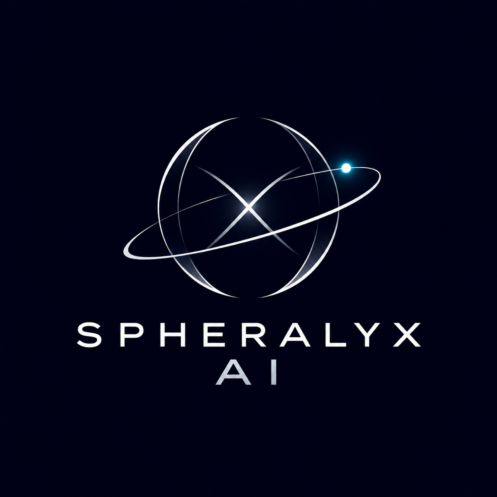

El cielo en detalle
Consulta imágenes SPHEREx reales mediante IRSA o explora por separado un campo celeste de demostración.

SPHERALYX AISPACE EXPLORATION INVESTIGACIÓN · REAL + SINTÉTICOUNA NUEVA FORMA DE MIRAR EL CIELO
Explora el universo más allá de lo visible. SPHERALYX AI combina consultas reales a NASA/IPAC IRSA con visualización astronómica y experimentos sintéticos de detección de movimiento. Cada resultado muestra su procedencia.
LA PLATAFORMA
Explora datos reales SPHEREx, estudia la compatibilidad temporal y prueba algoritmos sobre imágenes sintéticas reproducibles.
Consulta imágenes SPHEREx reales mediante IRSA o explora por separado un campo celeste de demostración.
Examina épocas reales bajo controles de compatibilidad; utiliza la secuencia sintética como demostración independiente.
Ejecuta AstroMotion y sus laboratorios sobre datos FITS sintéticos con métricas y limitaciones explícitas.
01 / EXPLORADOR
Accede a SPHEREx real mediante IRSA y, por separado, a un campo sintético interactivo.
Consulta IRSA usando RA y Dec del formulario inferior. El visor y la línea temporal de demostración permanecen separados y simulados.
Ejemplo documentado QR2: RA 156.09328159°, Dec −41.64466331°, radio 0,01°. En una ejecución anterior se registró una búsqueda y una vista PNG. Este registro no incluye el FITS ni el PNG y no es una consulta en vivo. Fuente: NASA/IPAC IRSA SIA2; ver README y guía de demostración.
Sin búsqueda real. Los resultados de IRSA nunca se sustituyen por simulaciones.
Selecciona dos observaciones de la búsqueda real. La compatibilidad espectral por píxel se comprueba con FITS; no se infiere movimiento.
Primero realiza una búsqueda real en IRSA.
02 / TEMPORAL EXPLORER
Reproduce una secuencia sintética y compara dos momentos de observación.
Comparación real: verifica si dos exposiciones SPHEREx son científicamente compatibles. Demostración temporal: utiliza imágenes sintéticas independientes.
Abrir comparación real en IRSA ↗03 / ASTROMOTION LAB
Analiza un campo de demostración y ejecuta por separado laboratorios FITS sintéticos con métricas reproducibles; no existe un modelo neuronal entrenado.
Explora candidatos de ejemplo con desplazamientos y señales generadas para esta demostración.
No se ejecuta un modelo de IA real. Los resultados son ejemplos ilustrativos y no constituyen descubrimientos científicos.
Ejecuta la demostración para revisar los candidatos del campo sintético.
05 / DISCOVERY CATALOG
Catálogo de ejemplos generados localmente. No contiene descubrimientos astronómicos confirmados.